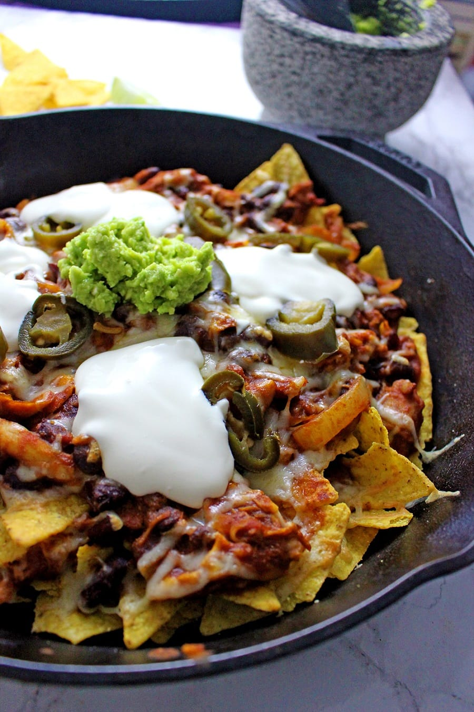

ingredients:
- 2 cups of cut chilli
- 198 grams of tortilla chips
- 2 cups shredded cheddar cheese
- salsa sause to your taste
- guacamole to your taste
- sour cream (i use lots :) )
method
Set oven to 200°C. Heat the chilli in a smallsaucepan or microwave untill hot. Spread half of the tortilla chips on the bottom of a 10-inch deep-dish pie plate. spoon half of the chilli over the chips. Sprinkle half of the cheese over the 'chilli nachos'. Repeat with the remaining chips, chilli and cheese. Bake for about 7-8 minutes until the cheese has melted. Top with salsa, guacamole and salsa. Serve right away if you want the maximum flavour.
YUM YUM !!!!!!